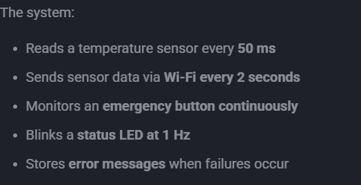

📚 Activity 01
Introducción
- Nombre: RTOS Tasks
- Equipo / Autor(es): Rodrigo Miranda Flores, Jose Maria Meneses Avendaño
- Curso / Asignatura: Embedded Systems II
- Fecha: 03/01/2026
- Descripción breve: Solve the tasks 1-5 about RTOS.

Excercise 1 — Identify Logical Tasks
List the logical tasks that exist in this system.
Assume:
- The system runs on a microcontroller
- Timing matters
- Some operations may block (Wi-Fi, storage)
| Task Name | Trigger | Periodic or Event-Based |
|---|---|---|
| Reads a temperature sensor | 50 ms timer | Periodic |
| Sends sensor data via Wi-Fi | 2 s timer | Periodic |
| Monitors an emergency button | Button press | Event-Based |
| Blinks a status LED | 1 Hz | Periodic |
| Stores error messages | Error event | Event-Based |
Excercise 2 — Task Characteristics.
For each task you identified, answer the following:
- Is it time-critical? (Yes / No)
- Can it block safely? (Yes / No)
- What happens if this task is delayed?
Write short, technical answers.
| Task | Time-Critical | Block Safely | Effect |
|---|---|---|---|
| Reads a temperature sensor | No | Yes | Sampling jitter increases, making trend analysis less reliable. |
| Sends sensor data via Wi-Fi | No | No | Other tasks may starve while the system waits for network completion. |
| Monitors an emergency button | Yes | No | The system may continue operating in an unsafe state longer than allowed. |
| Blinks a status LED | No | Yes | User feedback becomes misleading about the actual system state. |
| Stores error messages | No | Yes | Faults may occur without being traceable during post-mortem analysis. |
Excercise 3 — Priority Reasoning.
Assign a relative priority to each task:
- High
- Medium
- Low
Then justify each choice in one sentence.
| Task | Priority (H/M/L) | Justification |
|---|---|---|
| Reads a temperature sensor | Medium | Late execution affects data quality but does not compromise system operation. |
| Sends sensor data via Wi-Fi | Medium | Delays reduce data timeliness but do not immediately impact control logic. |
| Monitors an emergency button | High | Any latency increases the time the system remains in a potentially dangerous state. |
| Blinks a status LED | Low | Incorrect blinking only affects user perception, not system behavior. |
| Stores error messages | Low | Post-event analysis may be incomplete without immediate logging. |
Excercise 4 — Design Judgment (Trick Question).
Which of the following should NOT necessarily be implemented as a FreeRTOS task?
- Emergency button monitoring_
- Wi-Fi transmission_
- Error logging_
- Status LED blinking_
Explain why in 2–3 sentences.
Task that should not necessarily be implemented as a FreeRTOS task:
- Emergency button monitoring
Explanation:
Emergency button monitoring is better handled using a hardware interrupt to ensure immediate response. A FreeRTOS task can be notified afterward if additional processing is needed.
Excercise 5 — Identifying Hidden Tasks in Pseudo-Code.
The following pseudo-code represents a single-loop embedded program written without an RTOS.
while (1) {
read_temperature_sensor(); // takes ~2 ms
if (button_pressed()) {
emergency_shutdown(); // must react immediately
}
if (time_since_last_send() > 2000) {
send_data_over_wifi(); // may block for 100–300 ms
}
toggle_status_led(); // 1 Hz blink rate
delay_ms(10);
}
Exercise 5.1 — Identifying Hidden Tasks.
| Hidden Task | Trigger (Time / Event) | Why it should be a Task |
|---|---|---|
| Reads a temperature sensor | Periodic execution inside the loop | A task keeps its execution independent from other code. |
| Monitors an emergency button | External event (button press) | Task prioritization helps ensure fast reaction. |
| Sends sensor data via Wi-Fi | Time-based (every 2000 ms) | A task isolates long communication delays. |
| Blinks a status LED | Periodic (Every 1 Hz) | Task scheduling maintains a steady blink rate. |
| Execution delay control | Each loop iteration | RTOS timing avoids blocking the entire program. |
Exercise 5.2 — Blocking Analysis
1) Which function can cause CPU blocking?
- The Wi-Fi transmission routine, send_data_over_wifi(), as it can keep the CPU busy for several hundred milliseconds.
2) Which parts of the system are affected while this blocking occurs?
- Safety inputs are checked with noticeable delay.
- The LED no longer toggles at a constant rate.
- Sensor readings are postponed, reducing timing consistency.
3) Which hidden task is the most exposed to this issue?
- Emergency button processing, since any delay compromises the system’s ability to react to critical events.
Exercise 5.3 — RTOS Refactoring Thought Experiment**
Without writing code:
Write short, technical justifications.
1) Which hidden tasks should be implemented as FreeRTOS tasks?
Sensor sampling should run as a dedicated task so its execution rate remains stable regardless of system load.
Network transmission should also be isolated into its own task, since long blocking times can disrupt the rest of the system.
LED control may be implemented as a low-priority task because it is periodic and has no functional impact on system safety.
2) Which behavior should be handled using an interrupt?
The emergency button should rely on an interrupt mechanism to ensure the shortest possible reaction time. This approach allows the system to respond immediately, even when other tasks are executing or blocked.
3) Which task should have the highest priority, and why?
Safety-related handling must run at the highest priority to guarantee immediate execution.
Delaying this task could allow the system to continue operating in an unsafe condition.